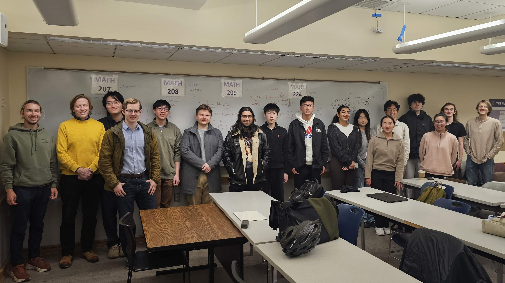

"Computers are useless. They can only give you answers"
— Pablo Picasso (1968)
The Math AI Lab is a meeting space for faculty, researchers, and students to collaborate on projects in the intersection of mathematics and AI. We will be meeting regularly on Mondays and Wednesdays from 4-5:30 in OUG 136.
Current leadership:
